大会運営 手順メモ（リハ用）
PC 運営画面（desk.html）での当日の流れを、画面写真つきでまとめました。写真の 赤い枠 が押す場所です。写真はリハーサル用の名簿で撮ったものです。
準備 試合が始まる前に
大会一覧から「リハ用」を選ぶ
トップ画面の ▶ 作成済みの大会 を開き、一覧から リハ用 を押します。運営画面が開きます。
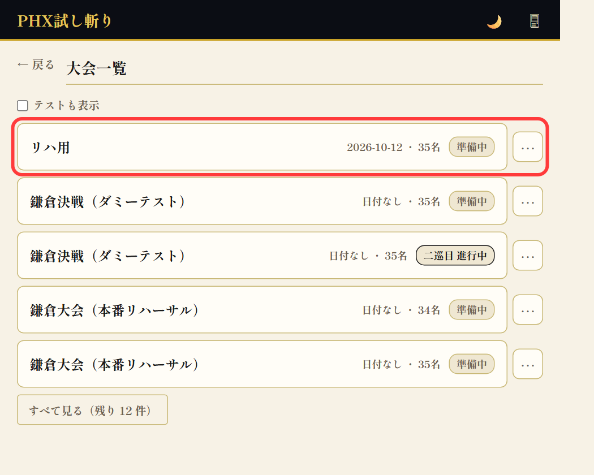
順番の並べ替えはドラッグでできます
左メニューの 選手登録 を開きます。各行の左端にある ⋮⋮ を押さえたまま上下に動かして離すと、試技順が入れ替わります。別のコートの帯に落とすと、そのコートへ移ります。
補足: まとめて並べ替えたいときは上の ⚙ 自動整列 が使えます（ゼッケンの奇数→A・偶数→B、ゼッケン順など）。準備中だけ使えます。
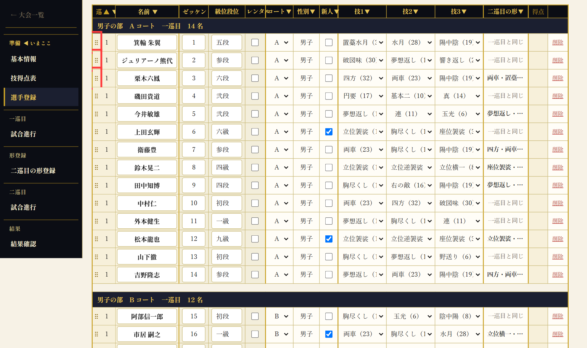
「試合開始」を押す
左メニューの 試合進行 を開き、右上の 試合開始 ▶ を押します。確認が出たら「OK」。これで各コートの採点ができるようになります。
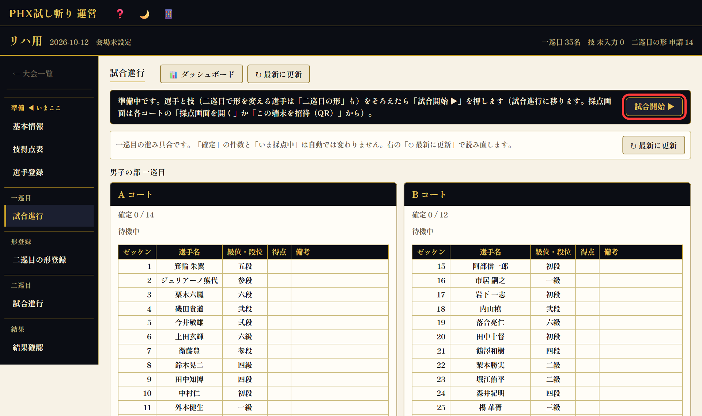
採点係用 タブレット・スマホで採点する人
「この端末を招待（QR）」で QR を表示する
試合進行のコートのカード（A コート・B コート）の下にある 📱 この端末を招待（QR） を押し、発行する を押すと QR コードが出ます。採点係のスマホやタブレットのカメラで読み取り、開いた画面で この端末を登録する を押すと、そのコートの採点画面が開けるようになります。
注意: QR は採点ができる「鍵」です。会場の画面で直接読み取らせてください。写真に撮って送らないでください。閉じると同じ QR は二度と出ません（必要なら発行し直します）。
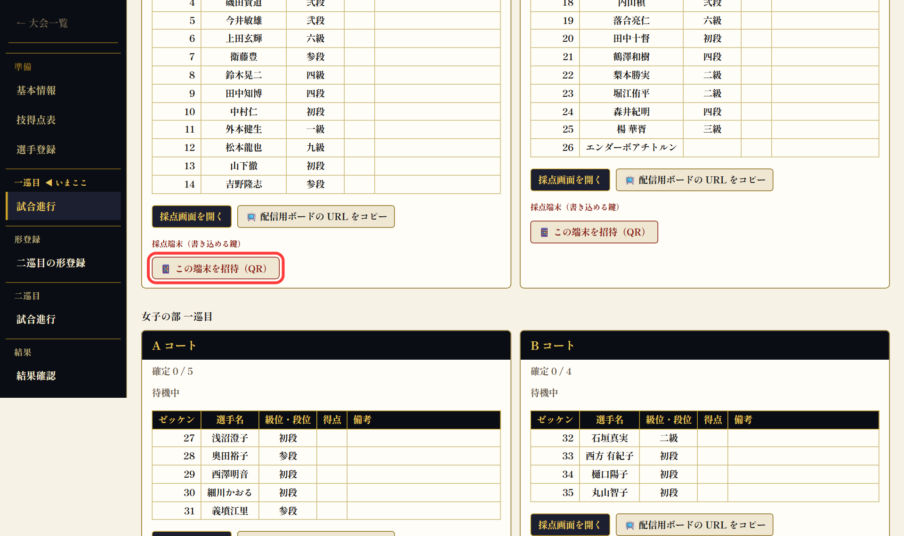
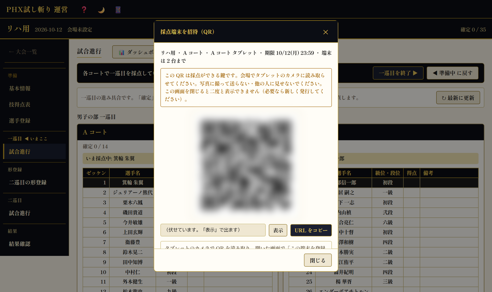
オンライン配信用 配信担当の人
「配信用ボードの URL をコピー」
コートのカードの 📺 配信用ボードの URL をコピー を押すと、オンライン配信に入れ込める画面の URL がコピーされます。配信ソフト（OBS など）の「ブラウザ」ソースに貼ります。コートごとに 1 つです。いま採点中の選手と得点が自動で切り替わります。
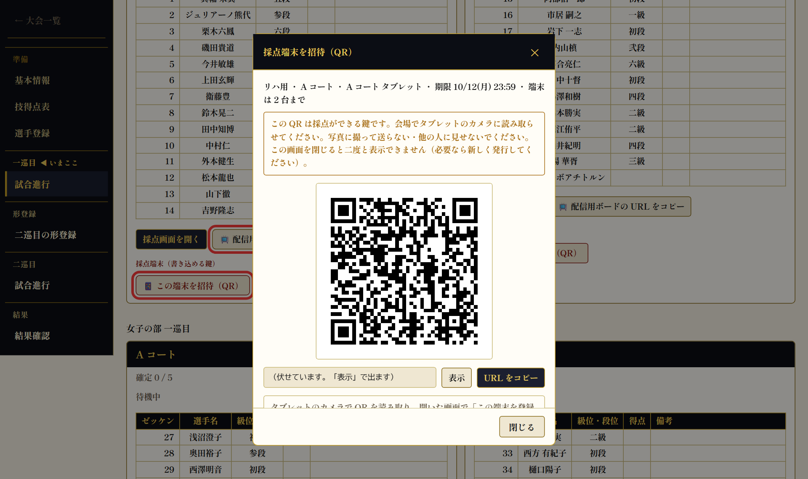
ダッシュボード 実況席用
「ダッシュボード」で採点と順位をまとめて見る
試合進行の見出しの横の 📊 ダッシュボード を押すと、各コートの採点・試合進行・順位が 1 画面に並んだ画面が開きます。実況席のモニターに向いています。
補足: ダッシュボードの上の ✎ 操作可能 に切り替えると、この画面から採点や試合進行の操作もできます。見るだけなら 👁 閲覧専用 のままにしておくと安全です。
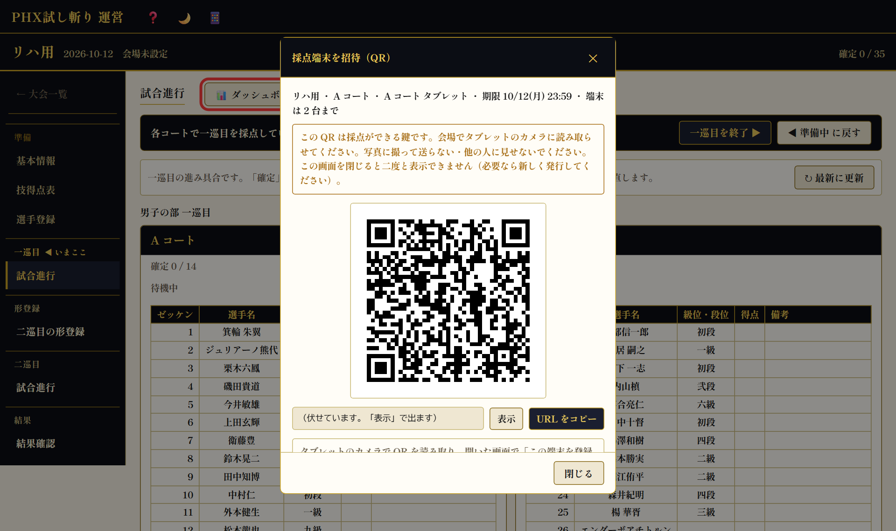
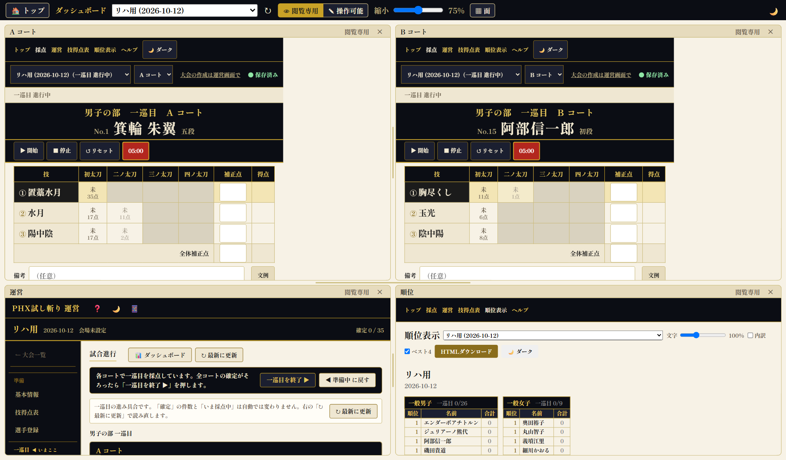
一巡目の終わり 二巡目の形登録まで
「一巡目を終了」を押す
全コートの採点が「確定」まで済んだら、試合進行の 一巡目を終了 ▶ を押します。押した時点で二巡目の行が自動で作られます（二巡目の試技順はコートごとに一巡目の得点が低い人からです）。
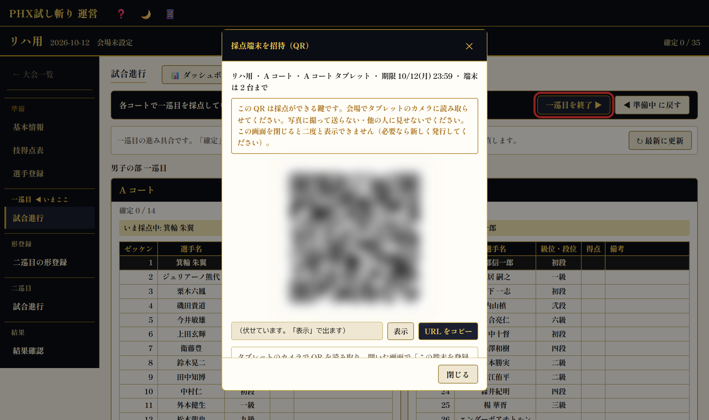
二巡目の形登録
自動で 二巡目の形登録 の画面に移ります。二巡目で形を変える選手の技が合っているか確かめ、違っていればここで直します。技に誤りがあると次の「二巡目を開始」が押せないので、画面の案内に従って直してください。
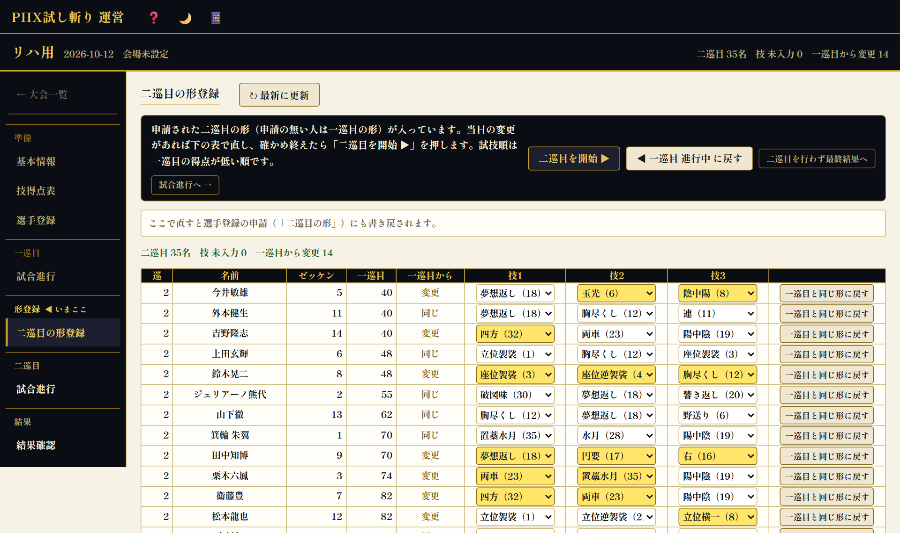
二巡目 開始からベスト4まで
「二巡目を開始」を押す
形の確認が終わったら 二巡目を開始 ▶ を押します。各コートの採点画面に二巡目の選手が出ます。
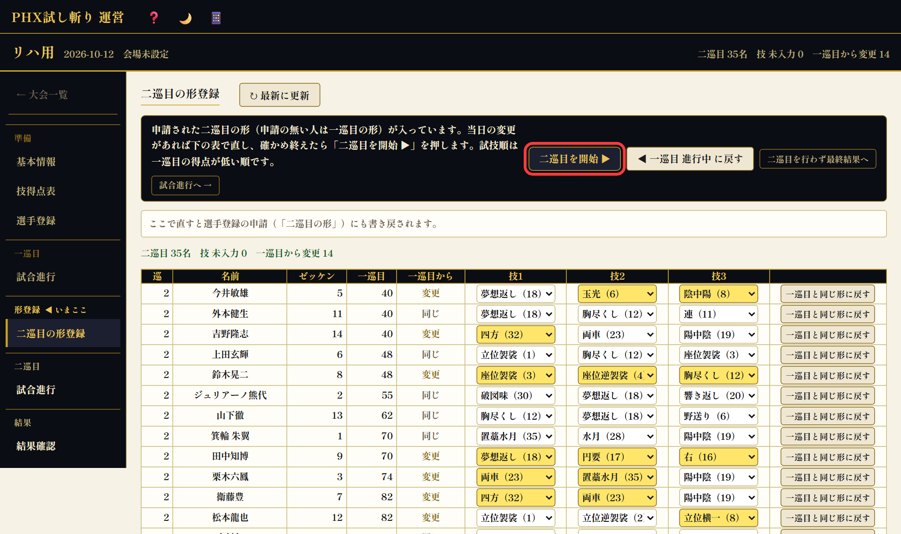
ベスト4候補の選出
二巡目の間、試合進行の上に 暫定ベスト4（合計） の行が出ます。一巡目と二巡目の合計が高い 4 名と、まだ採点が済んでいない人数です。採点が確定するたびに自動で入れ替わります。
終盤の演出: ベスト4 に入りそうな選手を最後に斬らせたいときは、採点画面の選手一覧（運営の端末の ⋮⋮）か選手登録で、その選手をドラッグして最後のほうに動かします。
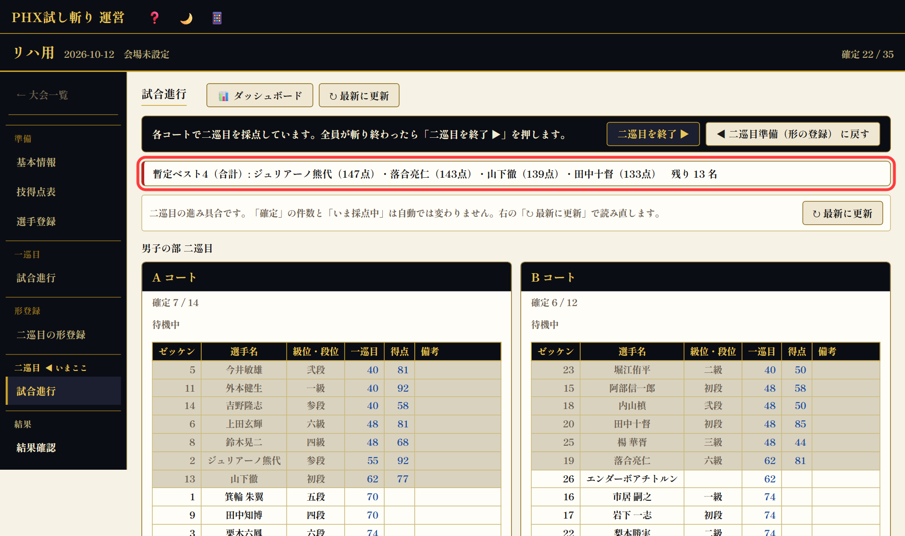
「二巡目を終了」を押す
全員が斬り終わって確定したら 二巡目を終了 ▶ を押します。
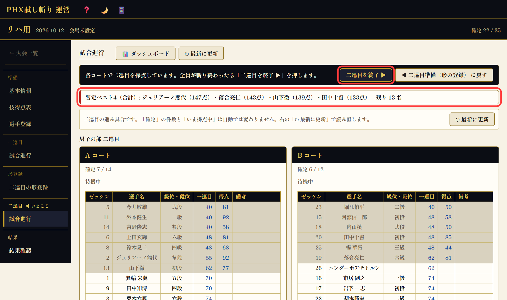
ベスト4 と順位を確かめて確定する
ベスト4（合計）と、一般男子・新人枠・一般女子の上位 3 名が出ます。内容を確かめて 結果を確定して表彰へ ▶ を押します。全順位は 結果確認で全順位 → で見られます。
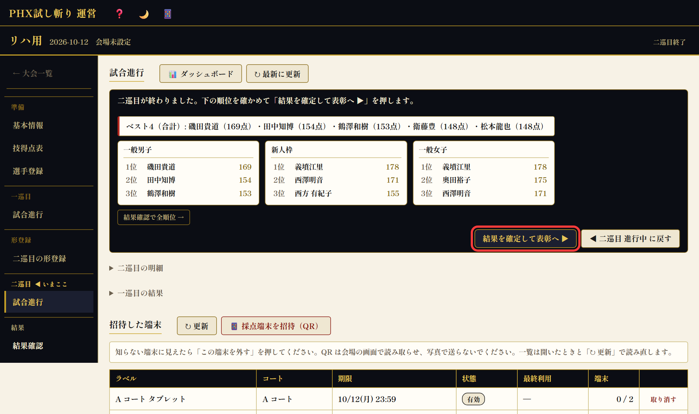
表彰 会場のスクリーンに映す
「発表モードで開く」で表彰画面を出す
左メニューの 結果確認 を開き、発表モードで開く を押すと、スクリーン用の画面が別タブで開きます。右上の 全画面 で全画面にします。
- ベスト4 — 画面をタップするたびに 4 位 → 3 位 → 2 位 → 1 位の順に 1 人ずつ出ます。
- 発表 — 部門（一般男子・新人枠・一般女子）を選び、タップするたびに下の順位から順に名前が出ます。
- 掲示 — 全順位をそのまま一覧で出します。
補足: 1 つ戻したいときは「←」キーです。
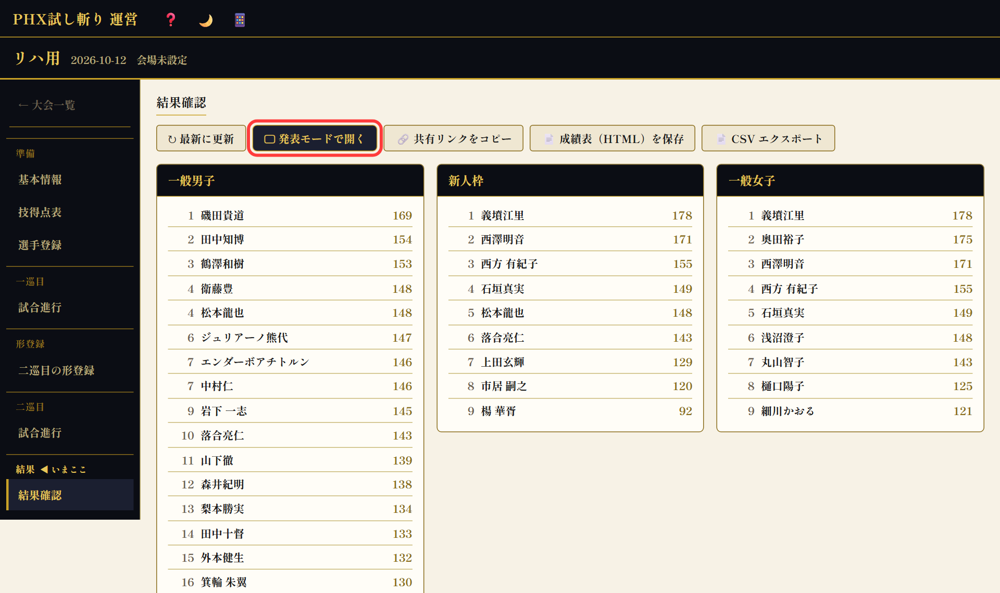
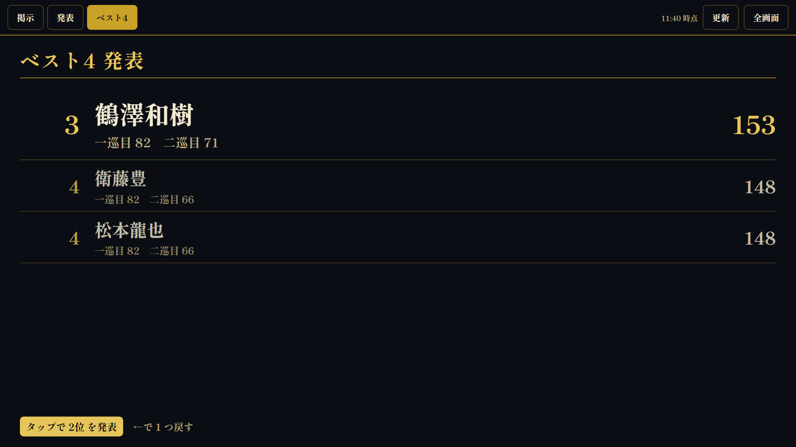
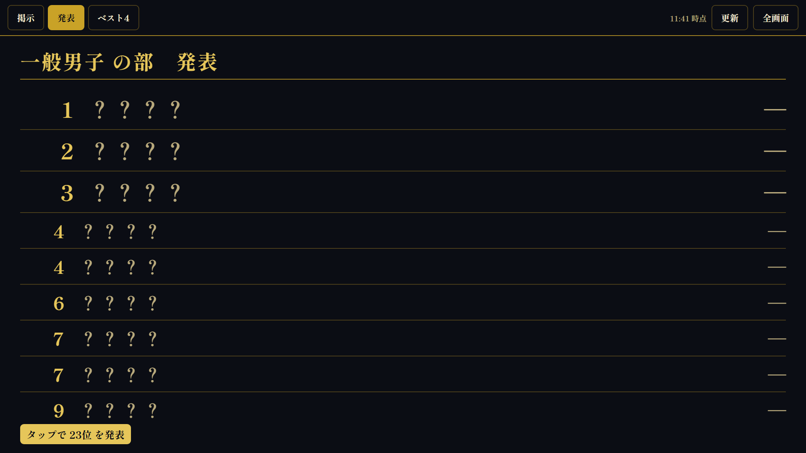